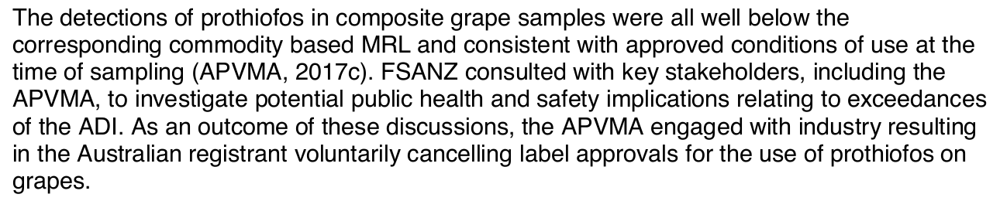

Legal, but not safe enough: what Australia's pesticide tests found on our fruit
Australia doesn't have a Dirty Dozen. Its own tests show most pesticide traces are tiny. But twice, a pesticide allowed on fruit had to be pulled once regulators saw how much of that fruit people actually eat.
Scroll to start
This is the 2026 Dirty Dozen. It ranks produce by pesticide traces, using US government tests of US produce.
Australia's own check, the Australian Total Diet Study, only tested 5 of these 12 fresh.
These are the 25 fresh fruits and vegetables Australia did test, ranked by how many different farm chemicals turned up in their samples.
Bok choi tops it with 16. Five had none.
The top three here, bok choi, capsicum and cucumber, aren't on the US list at all.
But a count of chemicals says nothing about how much was there. That's what decides whether it matters.
Each dot is one chemical. It sits at how much the heaviest eaters got, as a share of the acceptable daily intake: the amount you could eat every day for life without appreciable risk.
49 of 52 stay under 10% of that.
One went over. Prothiofos, an insecticide, came only from grapes. Young kids who ate grapes got double the safe amount on average.
Yet every grape sample was under the legal limit. After FSANZ raised it, the company behind it cancelled its use on grapes.


25th Australian Total Diet Study, page 30. Food Standards Australia New Zealand.
In 2025 it happened again, with berries.
A Southern Cross University researcher reported pesticides in NSW supermarket berries, including one banned since 2001. In November, the NSW Food Authority bought 100 punnets from Sydney shops and had them tested.
95 of the 100 had at least one pesticide.
Every one was within the legal limit, and the banned pesticide wasn't in any of them.
But legal wasn't the whole story. Australians now eat significantly more berries than when the insecticide dimethoate was last assessed in 2017.
At today's intake, the regulator found its approved use on berries no longer left an adequate safety margin. It suspended that use in November 2025, while saying the residues found were unlikely to pose a serious risk.
So what would an Australian Dirty Dozen show?
Not a list of foods to avoid. Most traces here are tiny. Both real problems were pesticides used legally on popular fruit, where the rules hadn't kept up with how much of it people eat.
The next full check is underway. FSANZ began collecting over 2,000 food samples in 2025 for a new Total Diet Study that includes pesticides. The last one used groceries bought in 2013 and 2014.
Look up a food
All 88 foods from the last Total Diet Study (bought 2013 and 2014), including bread, cereal, meat and drinks.
How this was made
The ranking and the dots are from the 25th Australian Total Diet Study (FSANZ, June 2019): Table A3.9 for which chemicals were found in which foods, and Appendix 11 for intake as a share of the acceptable daily intake. Groceries were bought in May 2013 and February 2014, then blended in threes into 508 composite samples. Most fresh produce had 8 composites each (mango and garlic had 4). Because each composite blends three purchases, these numbers can't be compared with US rates, which come from single samples.
The ranking counts different chemicals per food, as FSANZ did, and ignores amounts. Each dot is the highest 90th percentile intake across age groups, for people who ate the food. Chemicals under 1% are drawn in a block below 1%.
Berry results are from the NSW Food Authority's Pesticides in berries survey (published March 2026): 80 blueberry and 20 raspberry punnets bought in Sydney on 3 and 4 November 2025, tested for 218 pesticides. © State of New South Wales through the NSW Food Authority, www.foodauthority.nsw.gov.au. The dimethoate suspension was announced by the Australian Pesticides and Veterinary Medicines Authority on 11 November 2025, as reported by Fruitnet. The new Total Diet Study was announced by FSANZ in January 2025.
The 2026 Dirty Dozen is from the Environmental Working Group, as reported by Food Safety News on 8 April 2026.
FSANZ material is used under CC BY 4.0. None of these agencies has reviewed or endorsed this page.